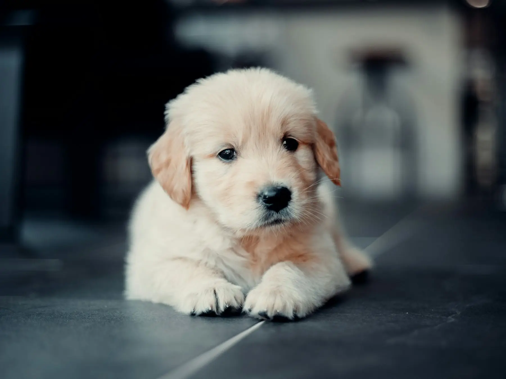
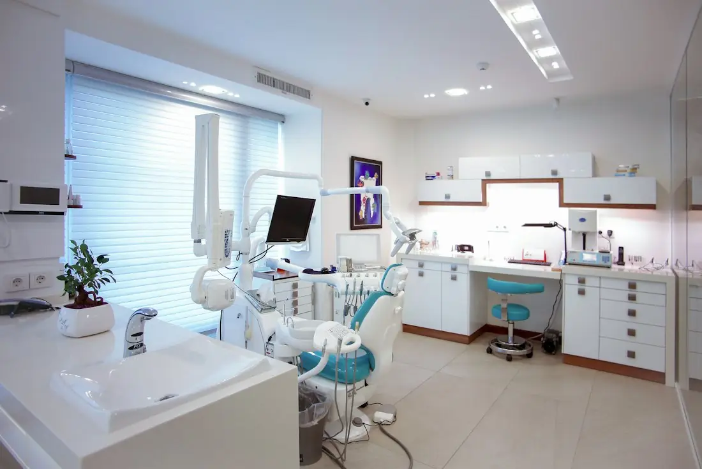

Şu an açığız. İstanbul saati
Gece ya da gündüz, kapımız açık.
Üsküdar'da 7 gün 24 saat acil veteriner. Yola çıkmadan arayın, siz gelene kadar ekip hazır olsun.
Acil hat, 7/24 0552 799 88 57Hizmetler
Acil müdahaleden rutin aşıya kadar, tek klinikte ve günün her saatinde.
-
Acil müdahale
Kaza, zehirlenme, nefes darlığı. Gece de gündüz de hekim klinikte.
-
Gözlem ve yatış
Serum, ağrı kontrolü ve yakın takip. Durumunu düzenli olarak size bildiririz.
-
Cerrahi
Kısırlaştırmadan yumuşak doku operasyonlarına, anestezi takibiyle.
-
Tahlil ve görüntüleme
Kan tahlili, röntgen ve ultrason aynı klinikte.
-
Dahiliye
Böbrek, sindirim ve deri sorunlarında teşhis ve uzun süreli takip.
-
Aşı ve koruyucu bakım
Aşı takvimi, iç ve dış parazit, yıllık kontrol.

Örnek görselHakkımızda
Ultravet, Üsküdar'da günün her saatinde açık bir veteriner kliniği. Acil vakalar için kurulduk, ama rutin muayene ve aşı için de buradayız.
Gece gelen bir hastaya gündüz gelenle aynı özenle bakarız. Tahlil, görüntüleme ve gözlem aynı yerde olduğu için zaman kaybetmeyiz.
- Çalışma
- 7 gün, 24 saat
- Konum
- Zübeyde Hanım Cd. No:12/C, Üsküdar
- Google puanı
- 4,7 (400 değerlendirme)
Tam bir evcil hayvan hastanesi. Güler yüz, hijyen, en önemlisi bilgi.
Google'daki bir değerlendirmeden
Neden Ultravet?
-
Hiç kapanmıyoruz
Bayram, hafta sonu ya da gece 3. Telefonu açan biri her zaman var.
-
Tanı aynı çatı altında
Tahlil ve görüntüleme için başka yere gitmeniz gerekmez.
-
Açık iletişim
Ne yaptığımızı, neden yaptığımızı ve maliyeti önceden söyleriz.
-
Hijyen önceliğimiz
Her hastadan sonra muayene alanı baştan temizlenir.
Gelmeden önce aramalı mıyım?
Evet, yola çıkarken arayın. Durumu kısaca anlatırsanız siz gelene kadar hazırlık yaparız.
Zehirlenme şüphesinde ne yapmalıyım?
Kendiniz kusturmaya çalışmayın. Yediği şeyin ambalajını ya da fotoğrafını yanınıza alın ve hemen arayın.
Yaralı bir hayvanı nasıl taşımalıyım?
Kedileri kapalı taşıma çantasında, yaralı köpekleri bir battaniye ya da düz bir zemin üzerinde, mümkünse iki kişiyle taşıyın.
Gece muayene ücreti farklı mı?
Gece ve tatil saatlerinde acil muayene ücreti farklı olabilir. Telefonda önceden bilgi veririz.
Hayvanım klinikte kalırsa nasıl haber alırım?
Gözlem süresince durumunu telefonla ve mesajla düzenli olarak paylaşırız.
Randevu ve iletişim
Rutin muayene ya da aşı için formu doldurun, sizi arayalım. Acil durumlar için formu beklemeyin.
Acil hat, 7/24 0552 799 88 57